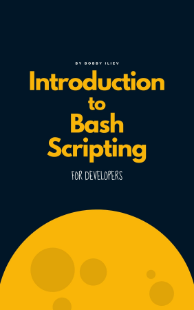

Scripting¶
Need a video?
Learning outcomes
- Learners can write Bash scripts
- Learners have practiced using a book on Bash scripting
- Learners can write Bash scripts that require user input
- Learners can use variables in Bash scripts
- Learners can use
ifstatements in Bash scripts - Learners can use
forstatements in Bash scripts
For teachers
Lesson plan:
| Time | Duration | Description |
|---|---|---|
| 0-10 | 10 | Prior |
| 10-15 | 5 | Present |
| 15-50 | 35 | Challenge |
| 50-60 | 10 | Feedback |
Prior:
- What is script?
- What is bash?
- What is meant with ‘user input’?
- What is a variable?
- What is a condition?
- What is a conditional?
- What is a for-loop?
Why use scripts?¶
Scripts allow you to run you (bash) commands in an easy and reproducible manner.
The different spellings
| Spelling | Description |
|---|---|
| Bash | The programming language |
bash |
The program |
Exercises¶
In these exercises, we’ll be using the book ‘Introduction to Bash scripting for developers’, as this book fits this course well, is free and open source and allows you to continue studying after this course

Exercise 1: Bash structure¶
- Read the text at chapter 2: ‘Bash structure’
- Create a file called
greeter.shwith a shebang following that chapter
Answer
In a terminal, type:
Add the following line to the file:
Remember that if this does not work on your computer, use the more flexible shebang:
Exercise 2: Hello world¶
- Read the text at chapter 3: ‘Hello world’
- Modify your Bash script called
greeter.shin such a way that you can run (‘execute’) it. When it runs, it should show ‘Hello World!’ on the screen. Run the script to verify
Answer
Edit greeter.sh to:
For the terminal, make greeter.sh executable with:
You can now run it with:
Exercise 3: Bash variables¶
- Read the text at chapter 4: ‘Bash Variables’
- Modify your Bash script called
greeter.shin such a way that it uses two variables:greeting, which should have valueHelloname, which should have valueWorldWhen it runs, it should (still) show ‘Hello World!’ on the screen. Run the script to verify
Answer
Edit greeter.sh to:
You can now (still) run it with:
Exercise 4: counting files¶
Bash can store the output of other tools in variables.
Write a script that counts and shows the number of files in our current folder:
- Create an executable script called
count_files.sh. - In the script, create a variable called
n_filesand initialize it like this:
-
Running the script should show: ‘You have [n_files] files’, where
[n_files]is the number of files -
Run the script to verify
Answer
Edit greeter.sh to:
You can now run it with:
Exercise 5: user input¶
- Read the text at chapter 5: ‘User input’
- Modify your Bash script called
greeter.shin such a way that the script asks for a name using the text ‘Who to greet?’. If the nameWorldis typed it, it should (again) show ‘Hello World!’ on the screen. Run the script to verify
Answer
Edit greeter.sh to:
You can (still) run it with:
Exercise 6: conditional expressions¶
- Read the text at chapter 9: ‘Conditional expressions’
- We will modify your Bash script called
greeter.shin such a way that when the name ‘Bond’ it chosen, the program showsIt is Bond. James Bond!, else it shows the regular greeting. Which conditional will you need?
Exercise 7: conditionals¶
- Read the chapters ‘If statement’ and ‘If Else statement’ of chapter 10: ‘Conditionals’, do not read ‘Switch case statements’
- Modify your Bash script called
greeter.shin such a way that when the name ‘Bond’ it chosen, the program showsIt is Bond. James Bond!, else it shows the regular greeting. Run the script to verify
Answer
Edit greeter.sh to the example below.
There are multiple solutions.
#!/bin/bash
echo "Who to greet?"
read name
greeting="Hello"
if [[ "${name}" == "Bond" ]] ; then
echo "It is Bond. James Bond!"
else
echo "$greeting $name!"
fi
You can (still) run it with:
Exercise 8: For loops¶
- Read only the ‘For loops’ section of chapter 11: ‘Bash loops’
- Create a new Bash script called
greet_names.sh. The script should:- Ask who to greet, with the text
Who shall I greet?. The expected input are names separated by spaces, e.g.Anna Berndt Cindy - Greet all of these people in the form
Hello [name]!, using a for loop to go through the names - Run the script to verify
- Ask who to greet, with the text
Answer
Edit greet_names to the example below.
There are multiple solutions.
You can run it with:
Exercise 9: For loops with Bash commands¶
Instead of iterating over names, we can iterate over something useful instead, such as the output of a Bash command.
- Create a new Bash script called
show_files.sh. The script should:- Store the output of
lsin a variable calledfilenames - Per filename, show
I found a file called [filename]!, where[filename]is the name of the file - Run the script to verify
- Store the output of
Answer
Edit greeter.sh to the example below.
There are multiple solutions.
#!/bin/bash
filenames=$(ls)
for filename in ${filenames}
do
echo "I found a file called {filename}!"
done
You can run it with:
Conclusions¶
Conclusions
- Bash can do most things one expects from a programming language
- A Bash script starts with a shebang:
#!/bin/bash - A Bash script can be made executable:
chmod +x greeter.sh - A Bash script can be run by writing
./in front of the filename:./greeter.sh - A Bash script can use variables:
greeting="Hello" - A Bash script can run Bash commands and store the result in a variable:
n_files=$(ls | wc --lines) - A Bash script can ask the user for input:
read name - A Bash script can do conditionals:
- A Bash script can use for-loops:
For teachers
What is the difference between AWK and Bash?
Answer
They are different programming languages.
What can Bash not do?
Answer
Bash, like any Turning complete language, can solve any computational problem, but cannot do this:
- run computations at any speed (i.e. a problem may take billions of year to complete)
- use any amount of memory (i.e. a problem may require billions of gigabytes to solve)
When not to use Bash?
Answer
Bash shines at problems of low and intermediate complexity, as it can connect all Bash commands.
For harder problems, use a modern programming language instead.
Next session¶
Next session
- Bash can do much more